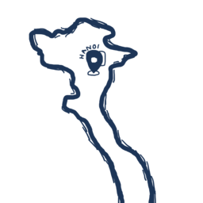
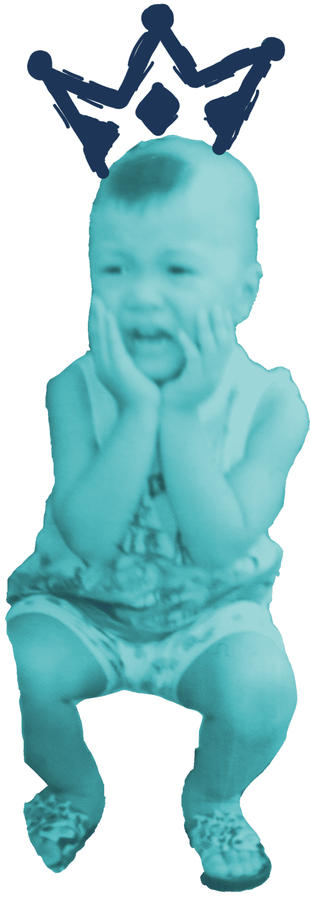

My story
First, a fun little story
My full name is Ta Quang Tung, but I like to be called Pine. My father named me after a prominent Vietnamese surgeon, Ton That Tung, whom he is a huge fan of. The name Tung translates into Pine (as in pine tree) in English. Even though I choose the pine tree as my personal logo, which you can see placed around this website, I like to interpret my name in its verb sense. The verb "to pine" means to become very sad at the loss of someone, which I think reflects my emotional personality really well.
My hometown
I was born on September 21, 2004 and have been living in Hanoi since birth. Hanoi, Vietnam's bustling capital, is a city where people are constantly on the go, both physically and mentally. The city is a significant cultural hub for both visitors and locals, as well as one of the nation's major economic hubs. The architecture of the city represents both the past and the present, with both contemporary high-rise structures and traditional districts.
Great, greater, greatest
During high school, I spent the majority of my first and second year preparing for the National English Olympiad, an annual academic competition hosted for gifted students all over the country. My hard work paid off and I managed to become a contestant. I emerged victorious with a second prize under my belt, which is my biggest achievement so far. I still look back to this time of my life with great pride and yearning. In retrospect, however, I have realized that the true prize was not the second title itself, but rather a deeper understanding of my potential and the true nature of my motivation.
Where I am now
Even though my academic background leans towards language, I have a deep passion for programming. The area I choose to specialize in, Software Development, strikes the perfect balance between logic and creativity. I am currently taking Software Development as a first-year student at Swinburne University. Here is my academic schedule. If you are also a Swinburne student, you might see me at these times!
| Monday | Tuesday | Wednesday | Thursday | Friday | Saturday | Sunday | |
|---|---|---|---|---|---|---|---|
| Morning | |||||||
| Afternoon | VOVINAM (1pm - 4pm) | TNE10006 (1pm - 5pm) | COS10026 (1pm - 5pm) | COS10005 (1pm - 4pm) |